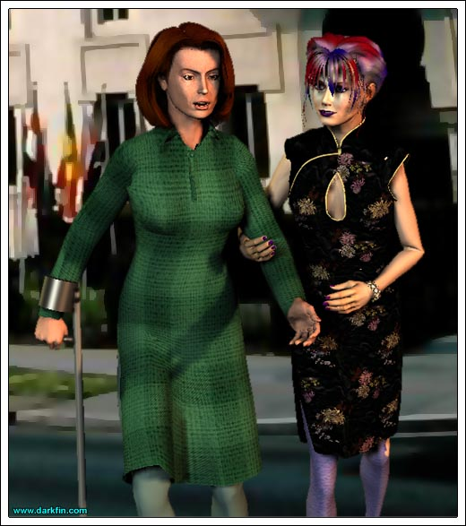
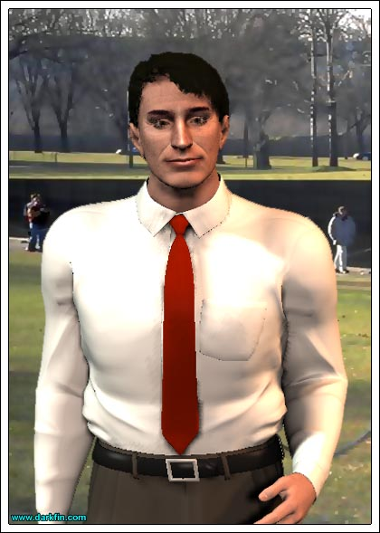

Mrs. Wembley Lydia, I can't tell you how much my husband is looking forward to having George step up with the real power elite
Penelope (Under her breath) A step up or a kneel down?
Lydia (Casting her daughter a harsh glance) Why, thank you, CeCe - George absolutely adores the Senator and is looking forward to their golf game
Penelope (Munching on some flat bread) Actually, he's really looking forward to the locker room
Mrs. Wembley (Sipping her tea) I'm sorry, dear?
Penelope (Saccharine smile) I do hope they have a smashing match today!
Mrs. Wembley I need to correct you, Penelope - it's referred to as a ROUND of golf, not a match
Penelope OH... ROUND... as in your LARGE, ROUND ASUMPH
Lydia So, CeCe, tell me more about your work with the Smithsonian?
Mrs. Wembley I'd love to, but first, I need to take a quick trip to the ladies' room - if you'll both excuse me
Lydia (Grabbing her hand) Penelope... do not use the pecans from your muffin as projectiles - either you eat them or set them daintily aside on your plate
Penelope (Huffing and folding her arms) At least give me her teacup so I can drool in it
Lydia (Winking) Sorry, Honey, that's my department
Lydia It won't be much longer, we just have some museum business to chat about and then we'll go meet your father
Penelope Did you hear what she said about my hair?
Lydia Well, whatever did you expect? - you have red, white, and blue streaks in it - you look like Betsy Ross' nightmare!
Penelope I was doing it to honor my father
Lydia And he appreciates your attempt at patriotism, Sweetie, but, next time - how about wearing a simple lapel pin?
Penelope (Shrugging) I could wear it through my nose
Lydia (Finishing her sandwich) Excellent
Penelope By the way, what makes you think I was being patriotic to THIS country? - England has red, white, and blue as well
Lydia Yes, but your father is not looking to become a member of parliament
Penelope He might be happier there - you know what the say about Englishmen
Lydia Hush up, that old bitty is returning - we need to make a nice impression - and stop slurping your salad
Mrs. Wembley (Taking her seat) Oh Pippy - I just thought of something for you...
Penelope (Biting her lip) Penelope
Mrs. Wembley Right - my granddaughter goes to an exclusive tanning salon in Alexandria - I could give you her number and she'd be more than happy to help you rid yourself of that ghostly pallor
Penelope It takes me about an hour each day to achieve this ghostly pallor - why would I want to get rid of it to look like every other Barbie bimbo sporting a shade of bronzed poo?
Lydia I WOULD LOVE SOME MORE TEA, PLEASE
Mrs. Wembley Lydia, I wanted to mention earlier how amazed I was by your presentation concerning your little museum in Duquesa Bay
Lydia Yes, the Chumash heritage display is a cornerstone of our... little museum - we're quite proud of it
Mrs. Wembley And you wrote all of the material yourself?
Lydia (Now becoming agitated) Yes - my brilliant daughter assisted me with the legwork - hee hee - but I indeed wrote it... word for word!
Mrs. Wembley (Applauding) Why Lydia, you can write, I am so impressed!

Lydia (Deepening her tone) Mrs. Wembley, Multiple Sclerosis is not synonymous with Mental Retardation - not only can I read AND write, I can do it better than 99.9% of the so-called healthy population out there, so, if you are done with your well-meaning condescension, Penelope and I will be on our way
Penelope (Finally breaking it) Did you have to be so mean to her, mom?
Lydia I'm just sick and tired of all of these people treating my brain like an invalid when it's only my body that deserves the reputation
Penelope (Playing with her bracelets) They just don't get it and they never will... until it happens to them or someone close to them
Lydia They're adults with an education supposedly past sixth grade, they should be able to grasp this rather simple concept
Penelope (Patting her mother's hand) Nothing with you is ever simple, mom
Penelope Did you take your pills today?
Lydia Not yet
Penelope (Raising an eyebrow) Can I have them, then?
Lydia (Wrinkling her nose) Don't be snarky - ooh, look, there's your father waiting for us!
George (Getting inside the limo) Did you two have a good lunch with Senator Wembley's wife?
Lydia (Trying to reposition her cramping leg) Typical
Penelope I threw pecans at her
George That's not nice, Pen... did you hit her?
Penelope Nicked her shin
George Good girl!
Penelope How was your ROUND of golf?
George Strategic - I met a lot of power players today - they think I have a realistic shot at a congressional seat in a few years
Lydia That's terrific, Geo
Penelope What's so great about here, anyway? - California is bigger than most countries - why can't you be happy there?
George I am happy there, but this is the progressive step that needs to be taken
Penelope Needs or wants?
Lydia Penny
George (Scratching his head) A couple of the men I spoke with today are really interested in your brother's new venture
Lydia Douglas has been so secretive about it, I'm not even sure what it involves
George It involves money and it involves power - the perfect combo for this town
Lydia True enough
George (Hesitant) And... as a result... I have been invited to one of their private clubs later

Penelope DAD - THAT'S NOT FAIR
George I'm sorry, Honey
Penelope (Pouting) You promised me a tour of the National Cathedral and the Oak Hill Cemetery - those were the only reasons I came on this stupid trip!
Lydia Don't forget about getting out of your classes
George I promise to make it up to you both - we'll do something fun tomorrow for sure
Lydia You have a heavy schedule of fund-raising meetings tomorrow
Penelope (Staring out the window) You two can go to hell
Lydia (Pinching her daughter's leg) Already there, Darling
George Listen, I'll catch a cab from here - you two go on and have a wonderful time, I'll meet you both for dinner
Lydia (Kissing his cheek) Good luck, George
George (Trying to kiss Penny's cheek) Daddy loves you!
Penelope (Turning away and sighing) Sure
Lydia (Wringing her hands) You know, while we're out here - why don't we check out Georgetown and George Washington University?
Penelope (Wiping away a tear) Why would I want to go to college, especially a college that is on the other side of the country... who would wipe your ass?
Lydia Penelope, don't be crude
Penelope It's a valid question and it CERTAINLY wouldn't be dad
Lydia We'll cross that bridge when we come to it
Penelope (Softly) You can't even cross the street
Lydia With a little luck and the HARD WORK your father is doing now, hopefully, he'll be here in a few years - so, it only makes sense for you to go to school here
Penelope And where will you be?
Lydia Most likely in the ground
Penelope I wish you wouldn't talk like that
Lydia But it is the eventual reality
Penelope It's ALL of our eventual reality - why can't we enjoy just one goddamn trip as a family?
Lydia This is what your father wants in life and I expect you to support him in this, whether I am here or not
Penelope What my father wants is that fucking faggot back at SCU
Lydia OH GOD, PENNY, GOD, I AM SO SORRY - HONEY, PLEASE
Penelope (Pulling away) It's OK - I guess I deserved that
Lydia (Tears rolling down her face) No, no you didn't
Penelope (Unable to keep from crying) WHY DO YOU LET HIM GET AWAY WITH IT? - WHY DO YOU LET HIM TREAT YOU LIKE THAT? - WHY DO YOU LET HIM TREAT US LIKE THAT?
Lydia It's complicated, Baby
Penelope NO, IT ISN'T - HE EITHER LOVES US OR HE DOESN'T
Lydia (Trying to hug her daughter) He DOES love us, Penelope, HE DOES... just not in the way we want him to
Penelope (Low whisper) He loves himself more
Lydia I won't attempt to argue with that
Penelope How in the hell did you ever fall in love with him?
Lydia (Bemused smile) Honestly, I don't really know... but I did
Lydia I was always considered to be "damaged goods" by men, your father was the first one to treat me with respect... to actually regard me as a sexual person
Penelope I'm not sure I want to hear this
Lydia You need to hear this - when I first met George, it was very obvious to me that he was bisexual but we still fell in love, we hid behind... and within each other - do you hate me for bringing you into this mess?
Lydia You know, if you ever wanted to find your natural parents, I wouldn't blame you in the least
Penelope No and no... no, I don't hate you - it's not your fault, I suppose it's not anyone's fault - and no, I have no need to find my DNA donors - for all of your fucked-up-ness, you and dad ARE and always WILL BE my real family
Lydia Heh, here I was thinking I could save this darling little baby they put in my arms and she is the one who ultimately ended up saving me
Penelope (Kissing her mother's cheek and smiling) An indentured servitude of 18 years
Lydia (Playful tone) That's right, slave, now BUFF MY NAILS
Penelope Yes, master - can we still go to the cemetery later?
Lydia Of course, but how about we go shopping first... ON YOUR FATHER'S CREDIT CARD
Penelope YAY